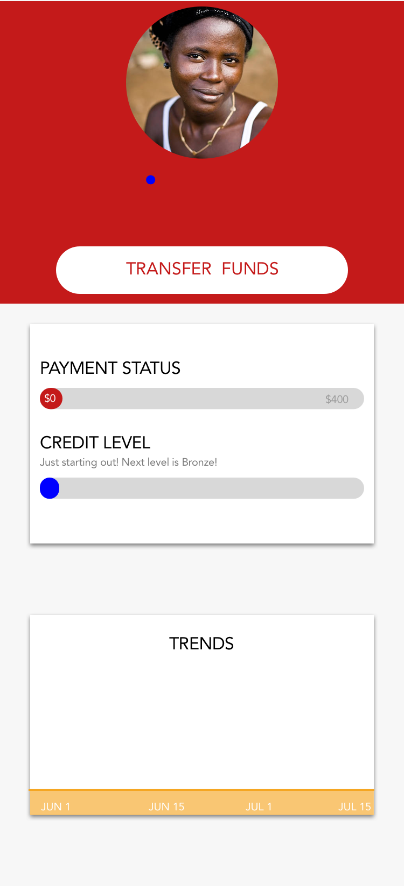

<!--
  Generated template for the ProfileTemplatePage page.

  See http://ionicframework.com/docs/components/#navigation for more info on
  Ionic pages and navigation.
-->
<ion-header>
  <ion-navbar>
    <button ion-button menuToggle>
      <ion-icon id="icon" name="menu"></ion-icon>
    </button>

    <ion-title class="title" >
      <p style='color: white'>Temp</p>
    </ion-title>
  </ion-navbar>
</ion-header>


<ion-content>
	

	<div class="test">
		<h3 class="text" >{{ name }}</h3>
		<p class="text">{{ ind }}</p>
		<p class="text">{{ city }}</p>
	</div>
</ion-content>
